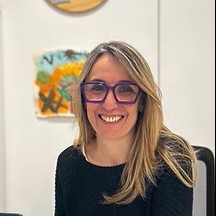

Anna Belén Cantudo
Logopéda
Especialista en la rehabilitació de la veu, la parla i la lectoescriptura, ajuda persones de totes les edats a millorar la seva comunicació. Graduada en Logopèdia, amb un màster en Dificultats d'Aprenentatge i un postgrau en rehabilitació de la veu.